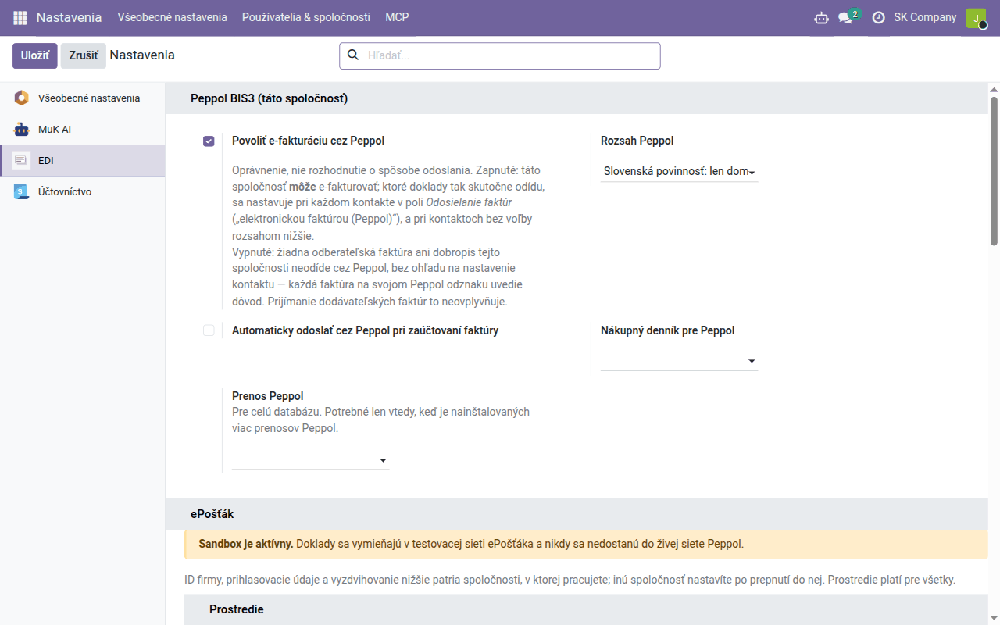
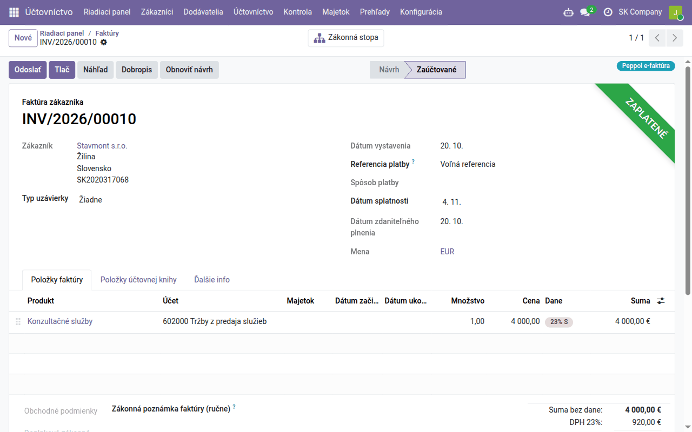
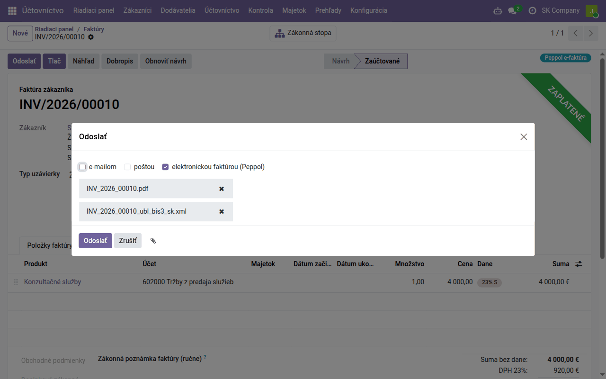

Návod k úlohe
Elektronické faktúry cez Peppol — predplatitelia Data Dance
Pre predplatiteľov hostovanej služby Data Dance — pripojenie do siete Peppol zariadime my, bez vlastnej zmluvy a bez kľúčov; Peppol adresy, ktoré faktúry odídu elektronicky, stavy doručenia a prijaté faktúry ako koncepty.
| Krajina | Česko a Slovensko |
|---|---|
| Edícia | Odoo Community |
| Zahŕňa | edi_base, edi_base_peppol, edi_epostak_base, edi_epostak_connector_sapi, edi_epostak_peppol, edi_epostak_broker_client (dodáva sa samostatne), l10n_sk_ubl_bis3 |
Na čo slúži tento návod
Peppol je európska sieť na výmenu elektronických faktúr. Faktúra v nej nie je PDF, ale súbor XML (Peppol BIS Billing 3.0), ktorý systém odberateľa načíta bez prepisovania. Do siete sa pripája cez prístupový bod a v sieti vás nájdu podľa Peppol adresy.
Tento návod je pre predplatiteľov hostovanej služby Data Dance. Do siete Peppol vás pripojí Data Dance cez prístupový bod ePošťák: nepotrebujete vlastnú zmluvu s prístupovým bodom ani žiadne kľúče. Ak si Odoo prevádzkujete sami s vlastnou zmluvou s ePošťákom, pozri návod Elektronické faktúry cez Peppol — vlastná zmluva s ePošťákom.
Slovensko: od 1. januára 2027 je elektronická faktúra povinná pri dodaní
tuzemskej zdaniteľnej osobe (a nezdaniteľnej právnickej osobe so sídlom v
tuzemsku), okrem oslobodených plnení a zjednodušených faktúr, a každý, kto také
faktúry dostáva, ich musí vedieť prijať
(§ 85o zákona o DPH). Do konca roka 2026 možno
elektronickú faktúru poslať len so súhlasom odberateľa.
Česko: všeobecná povinnosť neexistuje; elektronický daňový doklad možno
vystaviť len so súhlasom odberateľa (§ 26 zákona o DPH).
Podrobnosti sú v module edi_base_peppol.
Pripojenie
Pripojenie zapne náš tím — požiadajte oň. Nainštalujeme moduly Peppol a ePošťák a v Nastavenia → EDI, časť ePošťák, vyplníme blok Broker Data Dance. Vo vašom Odoo potom nie sú žiadne prihlasovacie údaje k ePošťáku; za ktoré spoločnosti smie vaša databáza posielať faktúry, rozhoduje služba Data Dance. Tieto polia nemeňte — vymazaním URL brokera by sa pripojenie prerušilo.
Vy nastavíte len to, čo nasleduje: povolenie e-fakturácie, rozsah a Peppol adresy. Prenos Peppol nechajte tak, ako je — jediným prenosom je ePošťák.
Pre českú spoločnosť sa o pripojení najprv poraďte s nami.
Nastavenie Elektronická fakturácia → Aktivovať PEPPOL v Nastavenia → Účtovníctvo je iná cesta do tej istej siete: zaregistruje vašu spoločnosť s prístupovým bodom spoločnosti Odoo S.A. Peppol adresa môže byť zaregistrovaná len u jedného prístupového bodu; v hostovanej službe ho zapnúť nemôžete a pripojenie cez Data Dance ho nepotrebuje.
Nastavenie
- Povolenie. Nastavenia → EDI, blok Peppol BIS3 (táto spoločnosť): zaškrtnite Povoliť e-fakturáciu cez Peppol a zvoľte Rozsah Peppol:
- Slovenská povinnosť: len domáce B2B a B2G — elektronicky odídu faktúry, ktorých sa slovenská povinnosť týka, ostatné ako PDF. Platí len pre slovenskú spoločnosť;
- Každý odberateľ s Peppol adresou — elektronicky každému, kto Peppol adresu má. Toto zvoľte pre českú spoločnosť.
Automaticky odoslať cez Peppol pri zaúčtovaní faktúry pošle faktúru hneď po zaúčtovaní; bez neho ju pošlete tlačidlom Odoslať. Nákupný denník pre Peppol je denník pre prijaté faktúry.

- Peppol adresa vašej spoločnosti. Na kontakte spoločnosti, karta Fakturácia: Peppol e-adresa (EAS) a Peppol koncový bod.
- Slovenská spoločnosť:
0245a vaše DIČ (desať číslic) — nie IČ DPH a nie IČO. - Česká spoločnosť:
9929a vaše DIČ (napríkladCZ12345678); Odoo ho z DIČ vyplní samo, skontrolujte ho. - Peppol adresy odberateľov na tom istom mieste ich kontaktu, podľa ich krajiny rovnako. Pred prvou faktúrou overte, že je odberateľ v sieti dosiahnuteľný — pozri kontrolu Peppol adresy.
- Ak má niektorý odberateľ dostávať faktúry inak, než určuje rozsah, nastavte na jeho kontakte Odosielanie faktúr (elektronickou faktúrou (Peppol), e-mailom …).
Ktoré faktúry odídu elektronicky
Každá zaúčtovaná faktúra a dobropis odberateľovi ukazuje v hlavičke odznak, ako odíde, a na karte Ďalšie info polia Odoslané ako a Dôvod:
| Odznak | Význam |
|---|---|
| Peppol e-faktúra | odíde cez Peppol |
| odíde obvyklou cestou (e-mail, pošta) | |
| Peppol, ale zablokované | mala by ísť cez Peppol, ale vaša spoločnosť alebo odberateľ nemá Peppol adresu — doplňte ju |
Pri slovenskej povinnosti ide ako PDF faktúra spotrebiteľovi (odberateľ bez IČO, DIČ aj IČ DPH), zahraničnému odberateľovi a faktúra, ktorej všetky riadky sú oslobodené. Živnostník s IČO je podnikateľ a faktúra mu odíde elektronicky.

Odoslanie
S automatickým odosielaním faktúra odíde sama pri zaúčtovaní. Inak kliknite na faktúre na Odoslať: spôsob elektronickou faktúrou (Peppol) je zaškrtnutý a k faktúre sa pripojí súbor XML. Ak chcete, pošlite odberateľovi aj PDF e-mailom.

Pred odoslaním Odoo súbor skontroluje podľa pravidiel EN 16931 a Peppol; faktúra s chybou neodíde a chyby sa vypíšu. Faktúra zostane zaúčtovaná — opravte údaj a pošlite ju znova. Doručenú faktúru už znova neodošlete: opravuje sa dobropisom.
Stavy
| Peppol stav | Význam |
|---|---|
| Pripravené / Vo fronte | čaká na odoslanie (fronta sa spracúva každé 2 minúty; pri dočasnom výpadku sa pokus opakuje sám) |
| Odoslané | ePošťák faktúru prevzal — to ešte nie je doručenie |
| Hotovo | faktúra je doručená do prístupového bodu odberateľa |
| Chyba | ePošťák faktúru odmietol alebo ju nemohol doručiť; dôvod je v správe |
Stav doručenia sa overuje každých 30 minút. Doručenie nie je súhlas odberateľa: ak jeho systém posiela odpovede, uvidíte na faktúre aj Peppol odpoveď na faktúru (napríklad Akceptované alebo Zamietnuté).
Prijímanie
Faktúry, ktoré vám dodávatelia pošlú na vašu Peppol adresu, Odoo vyzdvihne každých 30 minút a z každej vytvorí koncept prijatej faktúry v Nákupnom denníku pre Peppol — dodávateľa, riadky, dane a sumy vyplní zo súboru a súbor XML priloží. Koncept sa nikdy nezaúčtuje sám: skontrolujte nákladové účty a dane a zaúčtujte ho.
Ak faktúry neprichádzajú, Nastavenia → EDI → ePošťák ukazuje Posledné vyzdvihnutie prijatých dokladov; Vyzdvihnúť prijaté teraz vyzdvihne hneď.
Kto čo smie
Faktúru cez Peppol pošle každý, kto ju smie upravovať — pri zaúčtovaní aj cez Odoslať. Tlačidlá Odoslať cez Peppol a Peppol odpoveď… a záložku Peppol EDI správy vidia používatelia so skupinou Používateľ EDI. Všetky správy sú aj v aplikácii EDI → Správy.